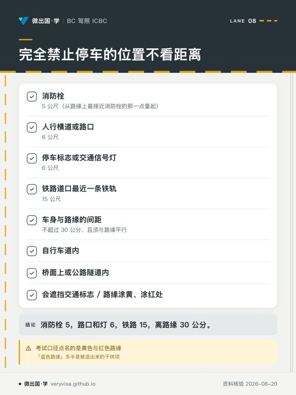

🃏 Flashcards · 3 闪卡 · 3 张 🖼 Slides · 2 幻灯 · 2 页 ✍️ Questions · 4 刷题 · 4 道
速度、跟车与泊车 Speed & Parking P1 必拿分 P1 Must score
ZH EN ZH + EN
先看这一章怎么考 First, how this chapter is tested
场景判断限速题：给出雨夜、浓雾、结冰或车流超速等路况，考你是否理解限速牌只是理想条件下的上限（Speed limit），恶劣条件下必须减速且绝不能随波逐流超速。 Speed limit scenario judgment: Given conditions such as rainy nights, dense fog, icy roads, or speeding traffic flow, tests whether you understand that posted speed limit signs represent the maximum ceiling under ideal conditions only, requiring you to slow down in adverse conditions and never speed just to go with the flow. 跟车秒数与特殊距离题：给出良好天气、跟在大货车或摩托车后方、暴雨湿滑路面，或跟随亮警灯执勤消防车等情境，考 2 秒、3 秒、4 秒三档规则与 150 公尺绝对距离。 Following distance seconds and special distance rules: Given scenarios of good weather, following a large truck or motorcycle, heavy rain with slick pavement, or following a fire truck responding with flashing lights, tests the 2-second, 3-second, and 4-second tier rules along with the 150-metre absolute distance requirement. 减速让行（Slow Down, Move Over）情境题：给出路边停着亮闪灯的拖车、养护车或警车，结合路段原有限速（80 km/h 及以上或低于 80 km/h），考通过时的最高限速（70 km/h 或 40 km/h）与变道义务。 Slow Down, Move Over situational questions: Given a roadside-stopped tow truck, maintenance vehicle, or police car displaying flashing lights, combined with the posted speed limit (80 km/h and above, or below 80 km/h), tests the maximum passing speed (70 km/h or 40 km/h) and the duty to change lanes when safe. 最常丢分的陷阱（看到题干信号就警觉） Traps that cost the most marks (watch for the signal in the stem)
把限速牌当成必达目标 Treating the posted speed limit as a target to maintain 题干出现 heavy rain、icy road、poor visibility 或 keeping up with traffic faster than the posted limit。 Question stem mentions heavy rain, icy road, poor visibility, or keeping up with traffic faster than the posted limit. 坡道打轮方向记反 Reversing the direction to turn front wheels when hill parking 题干同时出现 parking uphill 或 parking downhill，并明确说明 with a curb 或 without a curb。 Question stem mentions parking uphill or parking downhill and explicitly specifies with a curb or without a curb. 泊车最小距离张冠李戴 Mixing up minimum statutory parking distances 题干询问 how close may you park to a fire hydrant / crosswalk / stop sign / railway crossing，或选项出现 blue curb。 Question stem asks how close you may park to a fire hydrant, crosswalk, stop sign, or railway crossing, or options mention a blue curb. 本章考点页：导图、要点表、7 道带逐项解析的练习 →
这一块是全卷数字最密集 的部分：默认限速、跟车秒数、泊车距离、坡道停车的方向。数字题在整份卷子里其实不到一成，但它们有个特点——要么全对，要么全错 ，不存在「大概记得」。
好在这些数字几乎都能从背后的道理推出来，不必硬背。这一篇的写法就是：先给数字，再给它为什么是这个数 。
一、原理与设计逻辑 本节回答 This section answers 回答为何按牌面限速开仍受罚，以及秒数与泊车距离的逻辑 Explains why speed limits are ceilings under ideal conditions only, and the logic behind following distance in seconds and parking distances. 本章考题 1 Question 1
限速是天花板，不是目标
这是整块内容的总纲，也决定了另外一整类题的答案：标志上的数值，是「理想条件下」允许的最高速度。
由它直接推出两条：
永远不允许为了跟上车流而超速。 「大家都开这么快」不构成抗辩。条件变差时，低于限速行驶才是守法 ——因为另有一条独立义务：按当时条件安全行驶。速度相对于条件过快是 Motor Vehicle Act s.144(1)(c) 下的独立违规，可以单独开罚单 ，哪怕你没超过牌面数值。
反向也有边界：无必要地开得过慢同样会被评估 。ICBC 的路考说明里明确写着，低风险场合行驶过慢也要扣分。
为什么跟车用「秒」不用「公尺」
因为秒数会自动随速度缩放 。
同样是 2 秒：在 50 km/h 是约 28 公尺，在 100 km/h 是约 56 公尺——正好对应变长的制动距离。用公尺就得每次换算，用秒数则一个规则走遍所有速度。
而且秒数当场就能量 ：前车尾部经过某个固定物（路牌、标线），开始数「一千零一、一千零二」，数完你才到达同一点，就够 2 秒。
泊车距离在保护什么
图：泊车距离——消防栓 5，路口和灯 6，铁路 15
那几个看似随意的数字，各自守着一样东西：
记住它守什么，比记住数字更牢 ，而且能在选项之间做判断：一个「消防栓 1 公尺」的选项，光看就知道消防车根本停不下。
坡道停车：只有一个问题要问
不要背方向。问自己一句：「万一它开始滑，我希望它滑去哪？」
上坡、有路缘 ：车会向后 滑 → 前轮打左 （转离路缘），轮胎侧面就会抵住路缘卡死；下坡 （有无路缘皆同）：车会向前 滑 → 前轮打右 ，直接顶上路缘；无路缘 ：没有东西可挡 → 一律打右 ，让车滑向路肩而不是车道。
结论只有一句：只有「上坡＋有路缘」打左，其余一律打右。
节末检索小测 · 先别往回翻，凭记忆作答 Quick recall check: answer from memory before scrolling back
Why does the safe following distance rule use seconds instead of a fixed number of metres?
为什么安全跟车距离规则使用「秒数」而不是固定的「公尺数」？
a Because time in seconds automatically scales the distance as your driving speed increases. ✓ 正确。秒数规则（Two-second rule）会自动随车速缩放实际距离：同样是 2 秒，在 50 km/h 约为 28 公尺，在 100 km/h 约为 56 公尺，正好匹配随速度增加的制动距离，而且能借路边固定物当场测算。 Correct. The seconds-based following distance rule automatically scales physical distance as vehicle speed increases: the same 2 seconds equals about 28 metres at 50 km/h and doubles to about 56 metres at 100 km/h, precisely matching longer stopping distances while allowing drivers to gauge distance using roadside fixed objects.
b Because drivers are legally permitted to exceed the speed limit while counting seconds. ✗ 错误，掉入「把限速牌当成必达目标」延伸陷阱。任何时候都不允许超过最高限速（Speed limit），测量跟车秒数与是否允许超速毫无关系。 Incorrect. This falls into an extended trap of 'treating the posted speed limit as a target to maintain'. Exceeding the maximum speed limit is never permitted, and counting following distance seconds has nothing to do with allowing speeding.
c Because stopping distance in metres stays exactly the same at 50 km/h and 100 km/h. ✗ 错误，违背物理与制动原理。车速从 50 km/h 升至 100 km/h 时，2 秒对应的距离从约 28 公尺翻倍到约 56 公尺，制动距离随速度显著变长而非不变。 Incorrect. This contradicts the physical principles of braking. When vehicle speed increases from 50 km/h to 100 km/h, the distance covered in 2 seconds doubles from roughly 28 metres to 56 metres, and stopping distance increases dramatically rather than staying the same.
d Because the Motor Vehicle Act only enforces following distances inside 20 km/h alleys. ✗ 错误，掉入「跟车秒数与特殊距离混淆」陷阱。跟车距离（Following distance）适用于所有道路，并非只在 20 km/h 的小巷内才受规管。 Incorrect. This falls into the 'confusing following distance seconds with special vehicle distances' trap. Safe following distances apply to all roadways, not just inside 20 km/h alleys.
看答案与每个选项的解析 Show the answer and why each option is right or wrong 答案 Answer ：a
二、2026 现行实务 本节回答 This section answers 回答限速、跟车、减速让行、泊车、坡道与失控的实务数字 Explains statutory rules for default municipal and rural speed limits, following distance seconds, Slow Down Move Over, parking distances, and hill parking wheel angles. 本章考题 2 Question 2 本章考题 4 Question 4
默认限速：三个数字
「默认」的意思是没有牌子时适用 。有牌子就照牌子——市政府可以依附例把某条路整体调成别的数值。
小巷那个 20 常被漏掉，但它要分清来源：Motor Vehicle Act 授权市政府以附例 把宽度不超过 8 公尺的小巷限速定为 20 km/h，立了附例的城市不必另立限速牌 ，所以小巷里看不到牌也可能是 20。没立附例的城市，小巷按市区 50 的一般规则走。理由很实在：小巷没有人行道，行人、垃圾桶、倒车出库的车共用同一片路面，两侧围栏与车库门造成大量视线死角。20 km/h 大致就是「看到东西还刹得住」的速度。
跟车距离：三档
跟大车留 3 秒是因为它挡住你的前方视野；跟摩托车留 3 秒是因为它能停得比你更快 ——这一条方向常被记反。
减速让行（Slow Down, Move Over）
路边停着亮闪灯的作业车辆时，须减速，门槛按路段限速 切分：
多车道路上还有第二个动作 ：在安全前提下并到远离的车道。
受保护的车辆清单比多数人以为的宽得多 ：警察、消防、救护、拖车 、公路养护、公用事业、商用车安全检查人员、土地测量员 、动物管制、垃圾收集 及其他路边作业人员。
罚则：$173 罚单 ＋ 3 个记分点。
例外 ：在有中央分隔带的分道公路上，从对向驶来时不适用。
泊车：距离表与禁停清单
必须留出的距离
记法：消防栓 5，路口和灯 6，铁路 15，离路缘 30 公分。
完全禁止停车的位置 （不看距离）
人行道或绿化带上
任何车道、后巷或路口的进出口前
路口之内 （除非有标志允许）自行车道内 桥面上或公路隧道内 会遮挡交通标志 的位置
有禁停标志处，或路缘涂黄、涂红 处
无残疾人泊车许可证、或车上没有残障人士时占用无障碍车位
注意考试口径点名的是黄色与红色 路缘。卷面上出现「蓝色路缘」这类选项时，它多半是被造出来的干扰项。
坡道停车
方向盘朝哪边，只分三种情况：上坡有路缘时前轮打左（转离路缘，溜车时轮胎抵住路缘）；上坡无路缘时前轮打右；下坡无论有无路缘，前轮都打右。
配套动作要做全 ：拉手刹；自动挡挂 P；手动挡下坡挂倒挡、上坡或平地挂一挡 。
掉头禁区
会妨碍其他车辆时
在弯道上 在坡顶或其附近 ——判据写得很具体：其他车在 150 公尺 内看不到你有禁止掉头标志处
设有信号灯的路口 商业区内，除非是没有信号灯的路口
市政附例另行禁止之处
共同点仍然是那一条：别人能不能提前看到你。 掉头是常规动作里横切车道最多、耗时最长的一个，对视距要求最高。
恶劣天气与失控
桥梁与高架路面比普通路面更早结冰。 原因是热传导：普通路面下方的地面是一块巨大的蓄热体，会持续从下方供热；桥面下方是空气，上下两面同时散热。结果是气温刚跌破冰点时，桥面已经结冰而两端的路面还是湿的 ——从有抓地力直接进入无抓地力，且往往就在弯道或强侧风路段。
黑冰（black ice） 是路面积水冻成的透明薄冰，因为透光看得见下面的沥青，看起来只像「路面发亮」。判据是路面看着湿，却没有水花溅起 。
水面滑行（hydroplaning） 的三大因素是车速、水深、胎纹深度 。车速能当场降，水深看运气，胎纹是开车之前就已经决定好的 ——所以它是唯一能提前控制的那一项。发生时：松油门、方向保持直、不要刹车 。
长下坡不要挂空挡。 这既不合法也不安全：丢掉发动机制动后，全部动能只能靠刹车片吸收，会导致刹车热衰退 ——刹车片与刹车油过热后制动力急剧下降，而发现踩不住时往往已在坡的中段、车速最高处。正确做法是提前降到低挡 ，让引擎分担减速，刹车只做阶段性修正。
跟随执行任务的消防车至少 150 公尺 ——这是少数用绝对距离而非秒数表达的规定，因为它的目的不是防追尾，而是不要挡住消防作业面 。
节末检索小测 · 先别往回翻，凭记忆作答 Quick recall check: answer from memory before scrolling back
Unless a sign tells you otherwise, what is the default speed limit on a highway outside a municipality in BC?
除非另有标志说明，BC 省市区外公路的法定默认限速是多少？
a 50 km/h on all unpaved and paved roadways. ✗ 错误，把市区内外记混了。50 km/h 是市区内（Inside a municipality）无标志时的默认限速（Default speed limit），不是市区外公路的数值。 Incorrect. This confuses areas inside and outside a municipality. Fifty km/h is the default speed limit inside a municipality when unposted, not the speed limit for roadways outside a municipality.
b 30 km/h during daylight hours on rural roads. ✗ 错误，张冠李戴。30 km/h 是设有标志的学校区与游乐场区（School and playground zones）在规定时段内的限速，不是市区外默认限速。 Incorrect. This confuses different speed limits. Thirty km/h is the posted speed limit in school and playground zones during designated hours, not the rural highway default speed limit.
c 80 km/h on roadways outside a municipality. ✓ 正确。依 Motor Vehicle Act s.146(1)，在没有张贴其他限速牌的情况下，市区外（Outside a municipality）的法定默认限速（Default speed limit）为 80 km/h。 Correct. Under Motor Vehicle Act s.146(1), when no other speed limit is posted, the statutory default speed limit outside a municipality is 80 km/h.
d 70 km/h whenever passing any parked car. ✗ 错误，掉入「减速让行门槛与对象缩水」混淆陷阱。70 km/h 是限速 80 km/h 及以上路段经过闪灯作业车辆时的减速让行（Slow down, move over）上限，不是市区外默认限速。 Incorrect. This falls into the 'narrowing the protected vehicles and thresholds under Slow Down, Move Over' trap. Seventy km/h is the passing speed ceiling when passing roadside vehicles with flashing lights on roads posted at 80 km/h or higher, not a default highway speed limit.
看答案与每个选项的解析 Show the answer and why each option is right or wrong 答案 Answer ：c
三、现实案例 本节回答 This section answers 回答雨夜超速、消防栓量法、坡道溜车、结冰桥面与拖车让行 Analyzes high-frequency exam scenarios including rainy night speeding, measuring fire hydrant distances, hill rollaways, losing control on icy bridges, and yielding to tow trucks. 本章考题 3 Question 3
场景一：雨夜的高速，按牌面 100 km/h 行驶。
牌面没超，但可能仍然违规——「速度相对于条件过快」是独立的违规条目。判据是能见度与路面附着力，不是牌子。
场景二：路边找车位，看到消防栓旁边正好空着一格。
5 公尺是从路缘上最接近消防栓的那一点 量起，不是从消防栓本体到车头。这个量法差别不大，但拖车公司量的是前者。
场景三：温哥华的坡道停车。
市内多陡坡，坡道停车是本地日常而非考题装饰。上坡打反方向的车，一旦手刹松脱就会一路后溜进车流。打对方向的成本是两秒钟，打错的成本是一辆车。
场景四：十一月的第一个霜冻早晨，过桥。
路面是湿的，桥面已经结冰。上桥前减速，桥上不刹车、不转向、不加速 ——让车滑过去，是唯一正确的处理。
场景五：路边一辆拖车亮着黄灯在拖车。
限速 90 的路段上必须减到 70，并在安全时并到远离的车道。很多人以为这条规则只管警车和救护车——拖车明确在清单内 ，罚则是 $173 加 3 分。
节末检索小测 · 先别往回翻，凭记忆作答 Quick recall check: answer from memory before scrolling back
On a frosty November morning, the road is wet as you approach a bridge that may already be icy. How should you cross the bridge?
在十一月霜冻的早晨，路面湿滑，你正驶近一座可能已经结冰的桥梁。你应该如何过桥？
a Keep your speed steady up to the bridge and brake firmly once you are on the bridge deck. ✗ 错误。桥面因上下两面散热会比普通路面更早结冰（Black ice），一旦在结冰桥面上踩刹车极易瞬间失去抓地力而侧滑失控。 Incorrect. Bridge decks freeze earlier than regular roadways due to cold air circulating above and below (creating black ice); braking on an icy bridge deck causes tires to instantly lose traction, triggering a severe skid.
b Slow down before reaching the bridge, then avoid braking, steering sharply, or accelerating on the bridge. ✓ 正确。桥梁与高架路面没有下方地面供热，在冰点附近会比两端湿路面更早结冰（Black ice）；正确做法是上桥前提前减速，在桥面上不刹车、不猛打方向、不加速，平稳滑过。 Correct. Bridges and overpasses lack ground insulation beneath them, causing black ice to form around freezing temperatures earlier than on surrounding wet roadways. The correct approach is to slow down before reaching the bridge, then glide across smoothly without braking, sharp steering, or accelerating.
c Shift into neutral before the bridge so the engine does not push the drive wheels on ice. ✗ 错误。行驶中挂空挡（Neutral）会切断发动机制动（Engine braking）与动力控制，既不安全也不符合规范。 Incorrect. Shifting into neutral while driving disengages engine braking and vehicle control, which is both unsafe and improper driving practice.
d Accelerate slightly on the bridge to reduce the time your tires spend on the cold surface. ✗ 错误。在已结冰的无抓地力桥面上加速会导致驱动轮打滑失控，上桥前减速、桥上保持平稳才是唯一正确处理。 Incorrect. Accelerating on an icy bridge deck with no traction causes the drive wheels to spin out of control; reducing speed before the bridge and maintaining smooth, steady momentum across is the only correct response.
看答案与每个选项的解析 Show the answer and why each option is right or wrong 答案 Answer ：b
四、历史变迁 本节回答 This section answers 回答哪些法定数字长期不变、哪些罚款与让行清单会调整 Explains which statutory numbers stay constant over time, and which fines and protected-vehicle lists have been adjusted.
数字类内容里，有些写在法条里几十年不动，有些每年都可能调 。分清哪些是哪些，比记住当下的数值更有用：
有确切时间线索的：
gov.bc.ca 的减速让行 页面标注最近更新于 2026-07-08 ；该规则的适用车辆清单已经扩展过。
罚款附表 BC Reg 89/97 最近一次修订为 2026-10-01 （BC Reg 67/2026）。
引用的 Motor Vehicle Act 条文，法规站标注现行状态为 2026-10-27 。
施工区那张「最低罚款 $196」的牌对得上 ：罚款附表里施工区超速 20 km/h 以内的罚款是 $170，加上受害人附加费，票面正好 $196（30 天内缴付 $171）。
本篇未能核实的两项，如实标出 ：① BC 现行最高的公路限速是多少、省内是否有路段张贴 120 km/h；② 减速让行清单具体在哪一年 扩展。这两项这里不给数字。
节末检索小测 · 先别往回翻，凭记忆作答 Quick recall check: answer from memory before scrolling back
Which of the following roadside workers is protected by BC's Slow Down, Move Over law when their vehicle displays flashing lights?
当车辆开启闪烁警示灯在路边作业时，下列哪类路边作业人员受 BC 省「减速让行」法规保护？
a Only police officers and ambulance paramedics responding to collisions. ✗ 错误，掉入「减速让行门槛与对象缩水」陷阱。受保护的清单早已不限于警察和救护车，还包括拖车、公路养护、公用事业、土地测量员等。 Incorrect. This falls into the 'narrowing the protected vehicles and thresholds under Slow Down, Move Over' trap. The protected list extends far beyond police and ambulances, covering tow trucks, highway maintenance vehicles, utility crews, land surveyors, and more.
b Only fire trucks that are parked within 5 metres of a municipal hydrant. ✗ 错误，把消防栓 5 公尺泊车规则与减速让行混为一谈。所有开启闪灯的路边作业车辆均受减速让行（Slow down, move over）保护。 Incorrect. This confuses the 5-metre fire hydrant parking rule with Slow Down, Move Over. All roadside service and emergency vehicles displaying flashing lights are protected by the Slow Down, Move Over law.
c Only commercial trucks stopped inside a 30 km/h playground zone. ✗ 错误。减速让行适用于全省各类限速路段（按 80 km/h 分界降速至 70 km/h 或 40 km/h），绝非仅限 30 km/h 游乐场区。 Incorrect. Slow Down, Move Over applies to all roads across BC (reducing speed to 70 km/h or 40 km/h based on the 80 km/h threshold), not just inside 30 km/h playground zones.
d Tow truck operators, highway maintenance workers, utility workers, and land surveyors. ✓ 正确。BC 省减速让行（Slow down, move over）受保护清单涵盖警察、消防、救护、拖车（Tow truck）、公路养护、公用事业、商用车安全检查员、土地测量员、动物管制及垃圾收集等作业人员。 Correct. Under BC's Slow Down, Move Over regulations, the protected list covers police, fire, ambulance, tow trucks, highway maintenance crews, utility workers, commercial vehicle safety inspectors, land surveyors, animal control, and garbage collection personnel.
看答案与每个选项的解析 Show the answer and why each option is right or wrong 答案 Answer ：d
五、边学边测
这一节的练习题在第 2 章考点页 ：每题点选即判分，附逐项解析，答错的题自动进间隔复习。也可以先去备考中心 做一次诊断。
六、核心术语双语表
延伸阅读
论坛全文：2026 BC 笔试考点三｜速度、跟车与泊车（Speed, Following Distance & Parking）
七、来源清单
均为 2026-08-20 核查。
Motor Vehicle Act, RSBC 1996, c.318 s.146(1)、s.146(8)(11)、s.147、s.189、s.190——默认限速、小巷限速的附例授权、学校区与游乐场区、泊车距离（消防栓 5、横道与信号 6、铁路 15 公尺）、离路缘 30 公分（法规站标注现行至 2026-10-27）ICBC《Learn to Drive Smart》第 4 章 Rules of the road——泊车距离表、禁停清单、坡道停车方向与挂挡、掉头禁区
ICBC《Learn to Drive Smart》第 5 章 See-Think-Do——限速是理想条件下的上限、两秒规则三档、空挡滑行
ICBC《Learn to Drive Smart》第 6 章 Sharing the road——闪灯车辆减速让行、消防车 150 公尺
ICBC《Learn to Drive Smart》第 8、9 章——桥面结冰、黑冰、水面滑行
gov.bc.ca《Slow down, move over》——70／40 门槛、$173 与 3 分、受保护车辆清单（页面标注更新于 2026-07-08）
gov.bc.ca《Variable speed limits》——可变限速牌的性质与罚则
BC Reg 89/97 Schedule 3 ——罚款附表（现行至 2026-10-27，最近修订 2026-10-01）
本页知识卡 不看正文也能拿到这一节的核心内容：先看导读，再看图。点图放大，左右翻页。
放大 ⤢ 没有牌子才用默认值；跟车秒数按条件增加。 先看 先看哪些行填车速、哪些行填秒数，别把两类数字混用。易漏 学校区或游乐场区只有有牌时才用对应值；其余默认值也会被路牌覆盖。下一步 去练习，把场景先分成限速题或跟车题再作答。详情与分享 → 
放大 ⤢ 距离题看最小间距；禁停题不看距离。 先看 先盯四个记忆数字，再回到各位置核对量的是哪一段距离。易漏 最容易错的是测量起点，而不是数字本身；不同项目的参照物不同。下一步 去练习，把距离题和完全禁停题分开做。详情与分享 → 本站依据官方原文自撰 · 出处见正文链接